最终画面 浏览器实时渲染，非离线烘焙。周界铁丝网与刀片刺网、岗楼、贯穿画面的长 T 墙、
天线场、汽车连与导弹发射车、指挥楼与营房、停机坪上的直升机，以及一直铺到画面顶边的院落群 ——
全部由代码生成，场景里没有一个外部模型文件。
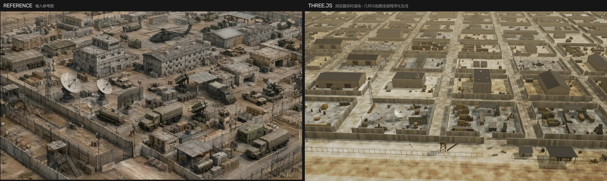
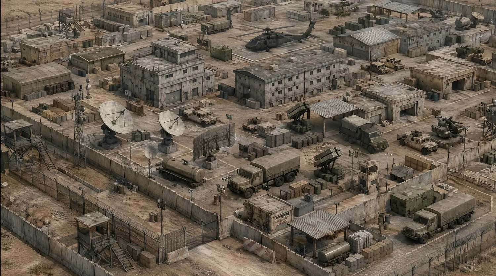
第一步不是写代码，是把图拆成一份可生成的清单 —— 程序化生成没有「照着抄」这一说，只能问「这东西由什么规则长出来」。
| 类别 | 清单 | 生成规则要回答的问题 |
|---|---|---|
| 周界 | 铁丝网 + 螺旋刀片刺网、外侧土路、带外楼梯的岗楼 | 刺网是真螺旋管还是贴图？岗楼楼梯怎么和平台对齐？ |
| 围墙 | T 形防爆墙把场地切成一个个院落 —— 画面里最强的图形结构 | 院落多大、路多宽、墙在哪儿开口 |
| 通信 | 两口大抛物面天线、桁架桅杆、若干小天线 | 抛物面的 f/D、馈源三脚架、俯仰叉架 |
| 载具 | 6×6 篷布卡车、悍马、油罐车、起竖的防空导弹发射车、双管高炮 | 剪影比例是否站得住（不是细节多不多） |
| 建筑 | 2 层指挥楼、3 层营房、深色坡顶铁皮库房 | 窗格密度、屋面材质与墙的明度差 |
| 堆料 | 集装箱、木箱垛、油桶 —— 院子是塞满的，不是空的 | 密度分布：贴着墙堆，还是散在中间 |
| 氛围 | 强烈沙尘，越远越糊；画面里没有天空 | 雾的浓度、基地要铺多大 |
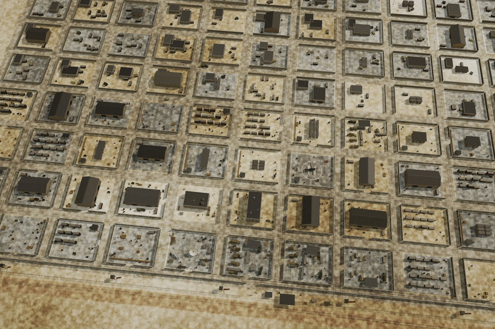
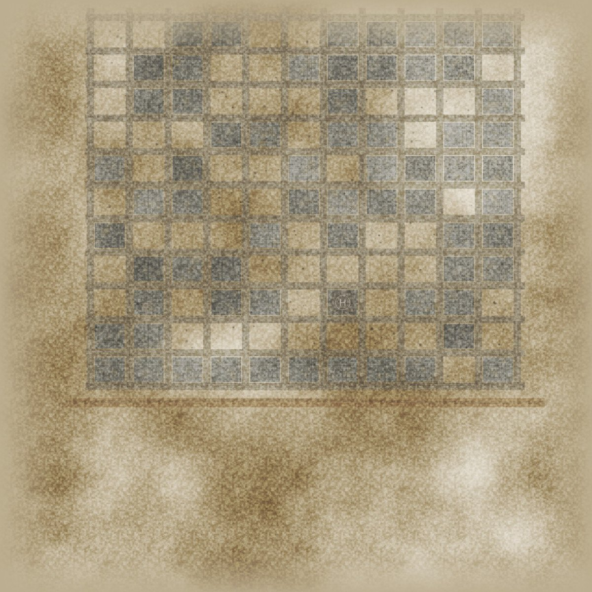
layout.js 输出一个 11 列 × 9 排的院落网格（48×40 m 院子、11 m 道路），
每个院子带 kind（用途）、seed、lod、
pad（有没有混凝土场坪）、四面墙的开口情况。前三排是照着参考图手工排的，往后随机填充。
把它单独抽成一层数据、而不是在摆放代码里硬编码坐标，换来三件事：
lod 按离相机的排数递减：前两排全细节，中间两排简化，最远五排只留剪影
（T 墙退化成一整段盒子，省掉九成构件）；「画面里没有天空」不是氛围描述，是一个可以列方程的约束：
画面底边必须落在周界土路上（z≈170），顶边必须还落在基地里（最远一排 z≈−300）。
设相机高 h、纵深坐标 Z0、垂直视场 fov：
theta_bottom = atan(h / (Z0 - z_bottom)) theta_top = atan(h / (Z0 - z_top)) fov = theta_bottom - theta_top
代入两个边界解出 h ≈ 100 m、Z0 ≈ 272、fov ≈ 34°。 然后拿第三个点验算：那道贯穿画面的长 T 墙在 z = 138，代进去得 36.7°， 落在画面下方 22% 处 —— 参考图里那条墙也在 25% 附近。方程解对了。
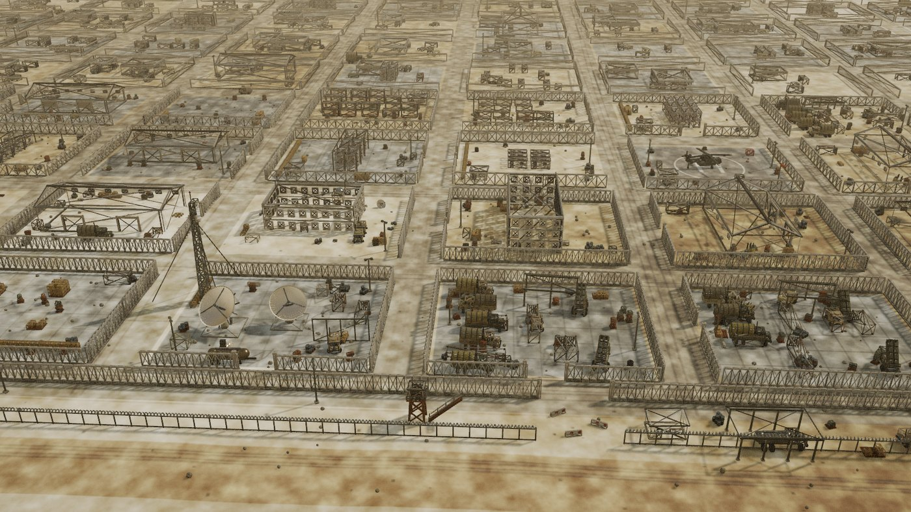
没有用 InstancedMesh。所有物件在同一个矩阵栈里就地生成 ——
墙、楼、卡车、天线一律直接吐世界坐标的几何，按材质丢进 13 个桶，最后每桶 merge 成一个 Mesh。
b.save().at(x, 0, z).ry(ry);
b.box('concrete', w, H, d, 0, H/2, 0, { color: bodyColor, tile: 5.5 });
b.restore();
三个让这套办法成立的细节：
concrete 材质能同时当墙、楼、掩体、路缘石，
颜色变化不需要拆材质 —— 这是 13 个 draw call 的前提。boxUV() 把盒子每个面的 UV 按米缩放，
所以 3 m 的墙和 30 m 的楼纹理密度一致，不会一个糊一个碎。整张总平面画进一张 4096² 贴图（见 2.1 右图），按顺序叠：沙土底色与大尺度色斑 → 压实道路 → 院内混凝土场坪（含分仓缝与裂缝）→ 停机坪圆圈和 H → 轮胎印 → 油渍与碎屑 → 高频颗粒 → 边缘向远景过渡。为什么不用一堆 plane 拼：
顺带解决的一件事：地面网格有 320×320 段的真实起伏（沙丘 + 周界土垄）， 但会按同一份平面数据把场坪和道路压平 —— 不然混凝土地坪会跟着沙丘一起波浪。
这是本文的重点，也是和本仓库 UE5 管线最不一样的地方。那条管线是单向前馈： 感知 → 布局 → 素材 → 匹配 → 装配，一路往下，前面的误差后面收不回来。 这里换成一个闭环，每一轮都跑同样四步：
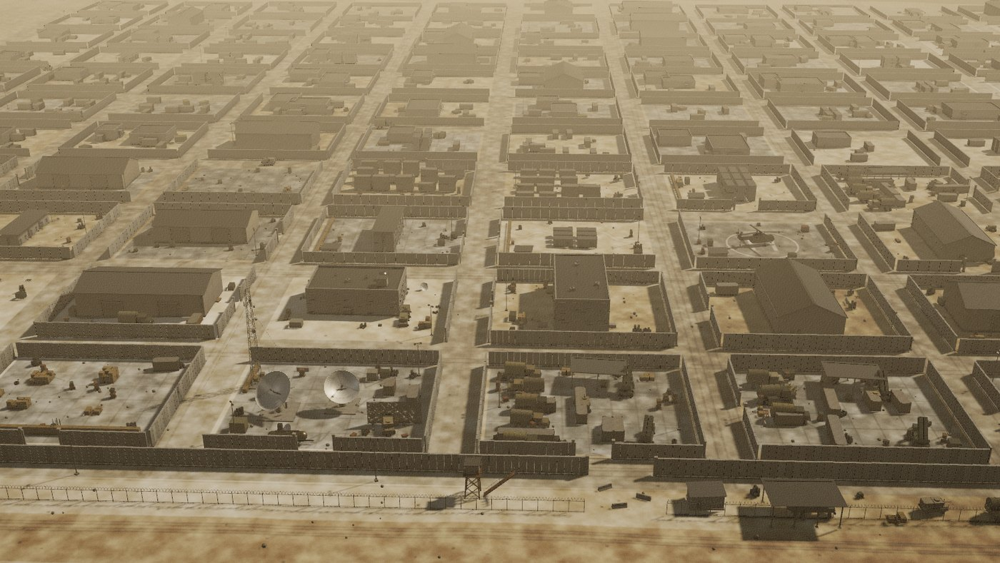
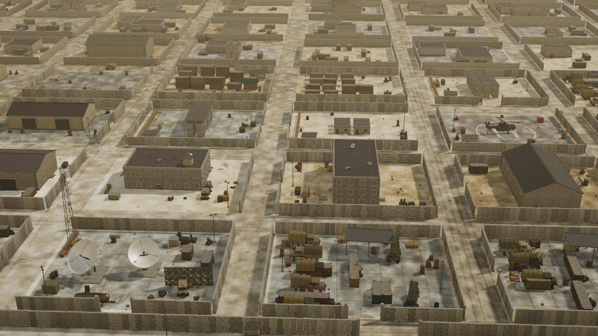
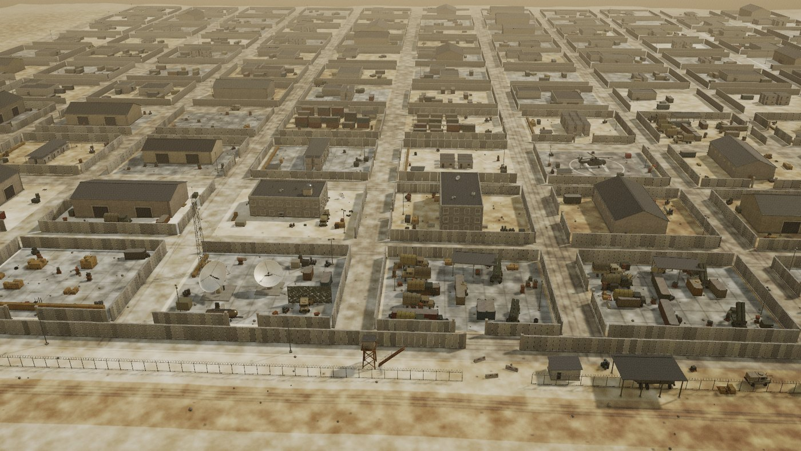
| 轮次 | 看到的问题 | 改了什么 |
|---|---|---|
| 1 | 首帧 concrete 桶整个没渲染出来；构建流程还会卡死不动 |
ExtrudeGeometry / IcosahedronGeometry 是非索引几何，
混进索引几何里 mergeGeometries 直接失败 —— 给它们补一条平凡索引。
另外 requestAnimationFrame 在非前台标签页不触发，进度让步改用 setTimeout |
| 2 | 满屏一个色调，没有明暗层次；屋顶和墙一样浅；院子是空的 | 加程序化环境球（PMREM）；混凝土调冷灰、屋顶单列深色；曝光 1.06→0.96； 雾 0.0015→0.0007；院内堆料密度翻倍，并新增「沿墙内侧堆」的分布规则 |
| 3 | 相机太近，丢了前景铁丝网和土路；地面太橙；道路和院子分不开 | fov 26°→38° 并后移相机；地面降饱和；道路改成更暗的灰 |
| 4 | 前景土路占了画面 22%；T 墙上出现假的横向条纹 | 铁丝网和土路前移 7 m；混凝土贴图的模板缝减半并减弱；墙面 tile 2.2→3.6 |
| 5 | 画面顶部露出了地平线 —— 参考图里没有天空 | 网格从 6 排扩到 9 排（z 一直铺到 −398）；雾加重 |
| 6 | 还是能看到地平线，且远排太素、糊成一片浅色 | fov 38°→34° 收窄纵深；背景排补集装箱和深色堆料 |
| 7 | 场坪太白太干净；天线太灰，不像参考图里最白的那两个东西 | 场坪调暗并加飘沙；天线面提亮到接近纯白，f/D 0.38→0.31 让碟面更深 |
| 8 | 把相机拉到 20 m 检查：窗户是浅色方块；集装箱是光面；天线面有放射状污渍 | 窗套原本是一整块板，把窗洞盖住了 → 改成四条边框；波纹 tile 0.55→2.2；
天线改用干净的漆面材质而非混凝土贴图 |
远景全对不代表模型是对的。主图里每扇窗只有两三个像素，错了也看不出来 —— 所以最后一轮专门把相机放到 20 m 高逐个检查，立刻抓到两处。
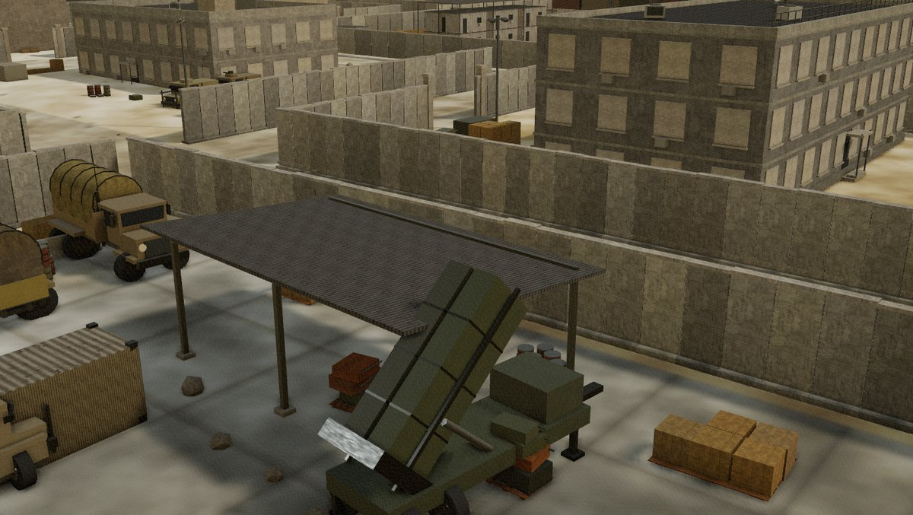
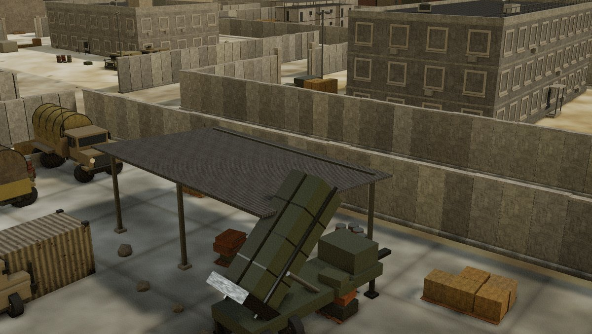
本意是画一圈窗套，实际写成了一整块比窗洞还大的板，盖在洞口外侧。 远看就是一片浅色方格 —— 参考图里那种密集的黑窗格全没了。改成上下左右四条边框即可。
- b.box('concrete', ww+0.3, wh+0.3, 0.09, ..) // one slab
+ b.box('concrete', ww+fw*2, fw, 0.1, ..) // top
+ b.box('concrete', ww+fw*2, fw, 0.1, ..) // bottom
+ b.box('concrete', fw, wh, 0.1, ..) // left / right
波纹贴图横向有 8 道棱，间距由 tile（多少米一张贴图）决定。
原来给了 0.55，算出来 6.9 cm 一道，远小于一个像素，直接被采样糊成平面。
改成 2.2 → 27 cm 一道，正好是真实集装箱的尺寸。
- tile: 0.55 // 6.06m / 0.55 * 8 = 88 ribs -> 6.9 cm + tile: 2.20 // 6.06m / 2.20 * 8 = 22 ribs -> 27 cm
回头看，这八轮有一个方法论上的硬伤：判据全在眼睛里。 每轮都是把渲染图和参考图并排看、挑最刺眼的一条改，没有任何可测量的量。 仓库里的并行线一把这个陷阱写得很清楚 —— 「人眼对整体亮度极不敏感、对局部错位又极敏感，凭感觉调会在两三轮后开始互相抵消」。
这句话在本文里是应验了的。看 3.2 那张表的第 3、5、6 轮：
| 轮次 | 改的是同一件事 | 结果 |
|---|---|---|
| 3 | fov 26° → 38° | 找回了前景周界，但纵深随之超出基地范围 |
| 5 | 网格 6 排 → 9 排 | 补地面去填顶边，治的是第 3 轮带出来的症状 |
| 6 | fov 38° → 34° | 又把纵深收回来 —— 绕了一圈回到 26° 和 38° 之间 |
三轮都在「取景」这一条轴上反复横跳，因为没有一个量在告诉我离目标还有多远。 其实这里需要的判据并不复杂 —— 哪怕只是一个布尔量「画面顶边的射线是否仍落在基地范围内」， 就能把第 5、6 两轮压缩成一次求解：它本来就是 2.2 节那个方程的第三个约束， 只是当时没把它写成代码，而是留在眼睛里。
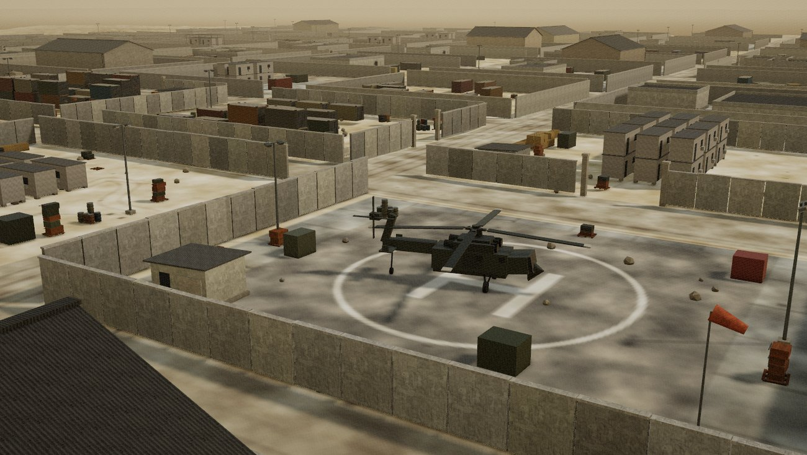
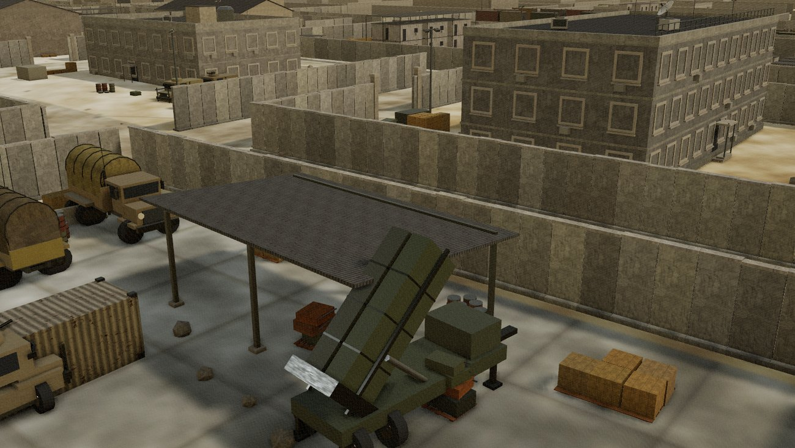
T 墙的底座 / 墙板 / 压顶三段式、集装箱的角件与门闩、卡车的篷杆、天线的馈源三脚架 —— 这些细节在主图里只有几个像素，但它们决定了主图里那片「杂物」看起来是有内容的还是一团糊。
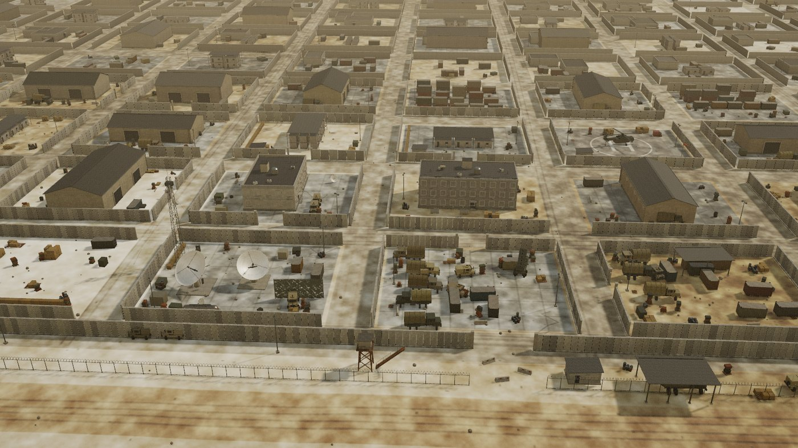
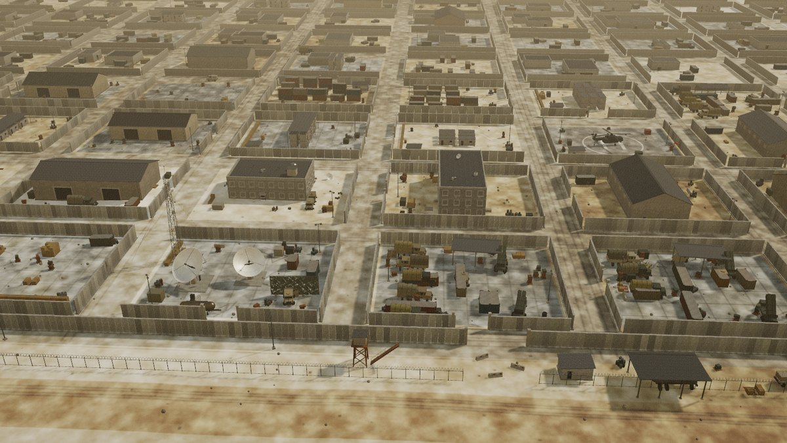
| 指标 | 值 |
|---|---|
| 帧时间（1280×720，GTAO 全开） | 24.4 ms |
| draw call（含阴影与 AO pass） | 60–64（主 pass 13） |
| 每帧三角面 | 5.63 M |
| 构件数 / 顶点数 | 44 441 / 1.69 M |
| 整场重建（换种子） | 约 4 s |
| 常驻几何 / 贴图 | 15 / 32（13 材质桶 + 2 层地面，反复换种子不涨，无泄漏） |
同一个命题「一张参考图 → 一个三维场景」，仓库里现在有三条路线，取舍各不相同：
| UE5 资产库管线 主线 |
还原度闭环迭代 并行线一 |
程序化生成 并行线二 · 本文 | |
|---|---|---|---|
| 内容来源 | 39 模块预制资产库 + 图生 3D 兜底 | 手工建模 + 本地资产库 | 全部运行时算出来，零资源文件 |
| 流程形态 | 单向前馈五阶段，误差逐级放大 | 度量驱动闭环，九步 | 目视驱动闭环，八轮 |
| 判据 | 装配回执（穿模 / 悬空） | 边缘 F 分数、16 分区曝光、直方图交集 | 肉眼并排比对（短板，见 3.4） |
| 渲染 | UE5 实时 | Cycles 离线，480 spp / 38 s | WebGL 实时，24 ms/帧 |
| 回答的问题 | 能不能可交付、可离线复跑 | 还原度上限在哪里 | 能不能从一张图长出一类场景 |
| 可变性 | 换图要重跑全流程 | 针对单图调优，不可迁移 | 换 seed 4 秒出一座新基地 |
cd webui/base3d && npm i # 唯一依赖：three.js python webui/base3d/serve.py 8177 # -> http://127.0.0.1:8177
面板里可以改：种子 · 相机预设（原图 / 俯视 / 地面）· 太阳方位与高度 · 曝光 · 沙尘浓度 · GTAO / 阴影 / 调色开关 · 截图。
python -m http.server：它从注册表读 MIME，
.js 会被解析成 text/plain，浏览器直接拒绝加载 ES module ——
配套的 serve.py 把 MIME 表写死了。
② 源码分层：rng.js 可复现随机源 / textures.js 程序化贴图与材质 /
builder.js 变换栈与分桶合并 / layout.js 总平面 /
ground.js 地面烘焙 / props.js 构件库 /
buildings.js 建筑 / vehicles.js 载具 /
base.js 摆放 / main.js 渲染与 UI。
参考图给的是「长什么样」，代码要回答的是「按什么规则长成这样」—— 把规则写对了，换个种子它还是一座讲得通的基地。